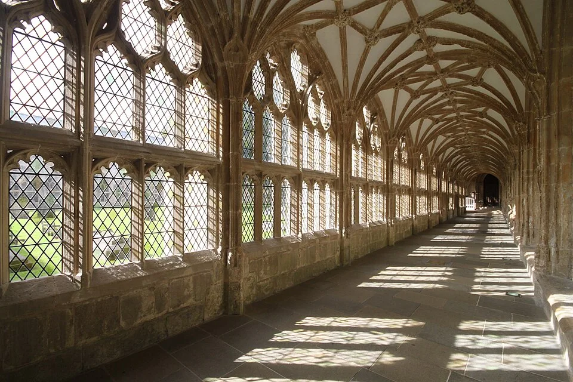

Medieval vault geometry at Wells Cathedral
Lift an example arch from a tracing plane into elevation while its endpoints stay fixed. Compare the principle with the Wells cloister photograph.
Inspect source image

Lift an example arch from a tracing plane into elevation while its endpoints stay fixed. Compare the principle with the Wells cloister photograph.
